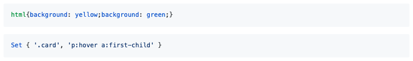

##! Initial Documentation
Before we continue to adding actual logic to allow to preserve _alternate_ comments, let's add some documentation to _TrapCSS_. The docs are kept in the *documentary* folder and are split by files, which are put in order by documentation software. The *index.md* and *footer.md* files in each of the inner dirs always go first and last respectively. The root *index.md* already contains the description which was placed in there by _MNP_. It also has the installation snippet and table of contents. But we can add some more text from the forked package to describe what the software will do, and some additional links.
````markdown
```sh
yarn add trapcss
npm install -D trapcss
```
## Introduction
_TrapCSS_ takes your HTML and CSS as input and returns only
the used CSS as output. Its custom HTML and CSS parsers are
highly optimized for the 99% use case and thus avoid the
overhead of handling malformed markup or stylesheets, ...
📙 [READ WIKI PAGES](../../wiki)
%~%
%TOC%
%~%
````
We'll give a link to wiki which contains some more detailed information, which will be compiled later. We use section breaks like `%~%` which insert visual separators between sections.
The *api/index.md* also contains essential data for generation of the README file:
```markdown
types/api.xml
types/index.xml
%EXAMPLE: example, ../src => trapcss%
%FORK example%
```
_Documentary_ uses components and markers. The typedef component allows to place method headings (when the `method=` attribute is given) and markdown tables with record descriptions.
The typedefs will result in the following generated text:
```markdown
## trapcss(
`opts: Config,`
): Return
Parses the supplied HTML and CSS and removes
unused selectors. Also removes empty CSS rules.
- opts* Config: The options for _TrapCSS_.
__`Config`__: Options for the program.
| Name | Type | Description | Default |
| ------------- | --------------------------------- | -------------------------------------------------------------------------------------------------------------------------------------------------------------------------------------------------------------------- | ------- |
| __html*__ | string | The input HTML. | - |
| __css*__ | string | The CSS to drop selectors from. | - |
| keepAlternate | boolean | Whether to keep the `@alternate` comment for
Closure Stylesheets. | `false` |
| shouldDrop | (sel: string) => boolean | Whether _TrapCSS_ should remove this selector.
The `shouldDrop` hook is called for every CSS selector
that could not be matched in the html. Return `false`
to retain the selector or `true` to drop it. | - |
__`Return`__: Return Type.
| Name | Type | Description |
| --------- | --------------------------- | ------------------- |
| __css*__ | string | The dropped CSS. |
| __sels*__ | !Set<string> | The used selectors. |
```
which looks like on the screenshot below:

To generate README, we run the `yarn doc` command that consists of: `doc [documentary]`
- *-o README.md*: the output file
- *-n _trapcss*: the root namespace
- *-a*: generate annotations into ``typedefs.json``
- *-d*: verbose debug logging
The default location for input is *documentary* but it can be changed. Method headings can also be [customised](methods) using your own `` component. Once again, the dev process for documentation is fully automated and provides customisation strategies so you can express your own creativity with custom method headings. Submit [an issue](index#getting-help) if you run into difficulties during customisation.
### Examples To Outputs
The second most useful feature of _NodeTools_ after the compiler is the ability to automatically place examples into README, and compute their output which is also added to README. We use the `%EXAMPLE%` marker to reference the example file that comes from the *examples* folder. Let's write an example for our program with some HTML and CSS to see if it works.
```md
%EXAMPLE: example, ../src => trapcss%
```
When placing examples, we can actually rename the local import into the package name so it looks professional to our users who can then just copy and paste the example into their own code.
To test example before actually compiling docs, we can call `alanode` which is simple proxy to Node with require hook that transpiles imports.
```bash
MacBook:trapcss zavr$ alanode example/
html{background: yellow;background: green;}
Set { '.card', 'p:hover a:first-child' }
```
The example is working fine, so we can embed it. We're going to modify the markdown file in the following way:
```markdown
%FORK-css example%
%FORKERR-js example%
```
It's possible to fork a single process and then output both stdout and stderr streams into the documentation. The language of the fork is also given after `FORK-{lang}` which means that stdout will be printed as CSS and the stdout as JS code block. Forked JS files are also cached so that if the example and/or any of its dependencies changed, the data will be read from cache which saves a lot of time for more complex programs that might call external APIs or system IO. Specifying language enables syntax highlighting on _GitHub_ so that docs will look neat.

When documenting code, we can keep _Documentary_ running with the [commit message] command. It will watch for changes in the source folder, as well as any assets such as examples, automatically replace the last commit when changes are detected, and force push the new git tree. So we can work on examples and styling of the docs, and immediately see updates on _GitHub_.
At this point, without having written any tests, we already confirmed that our package is working correctly, because we managed to execute the example and place its output into the README file. This is called using documentation for quality assurance, as it lets us see the expected output. If the output was different from the one we wanted (or no output at all), we'd realise that by the time our documentation is placed on _GitHub_ (in automatic mode) or in git diffs (when running single command).